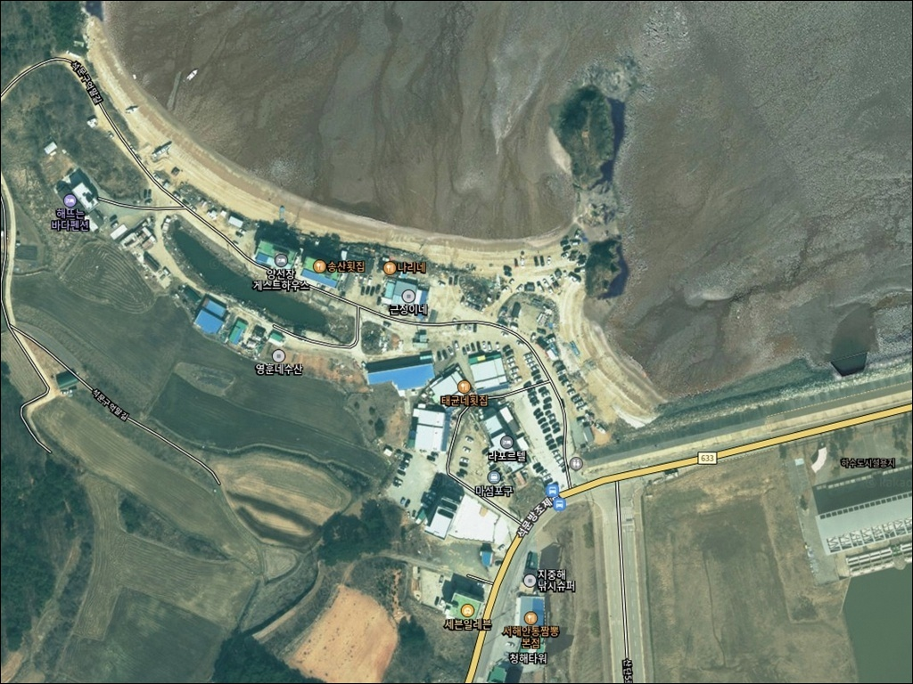
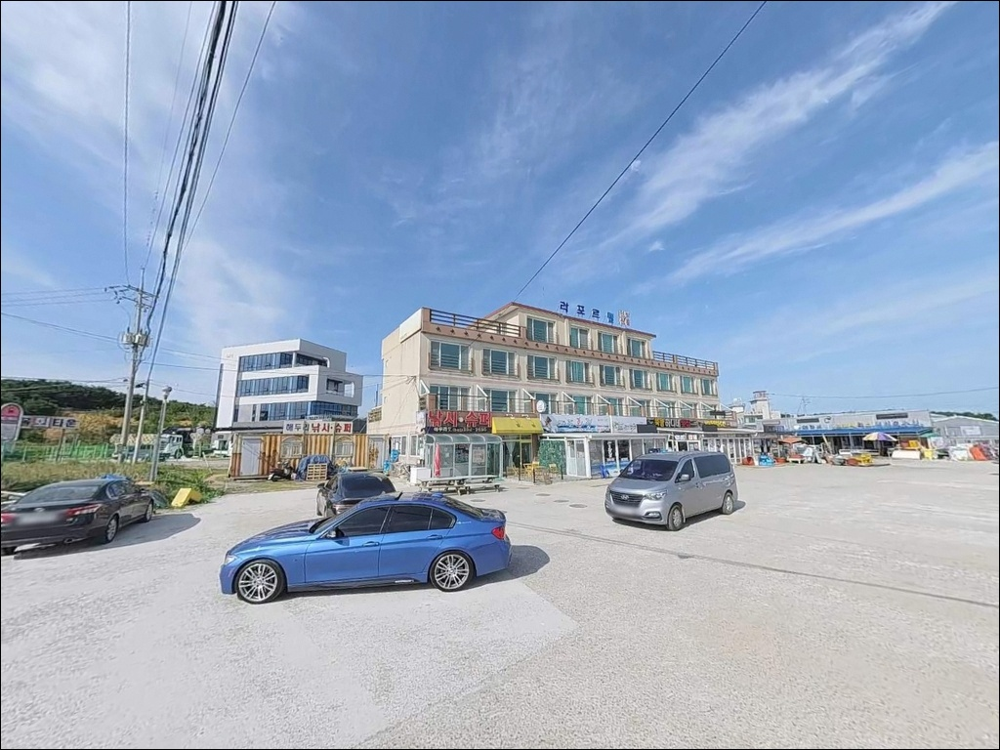
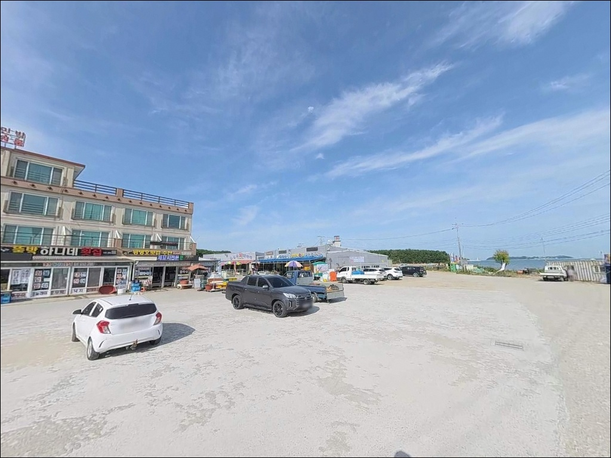
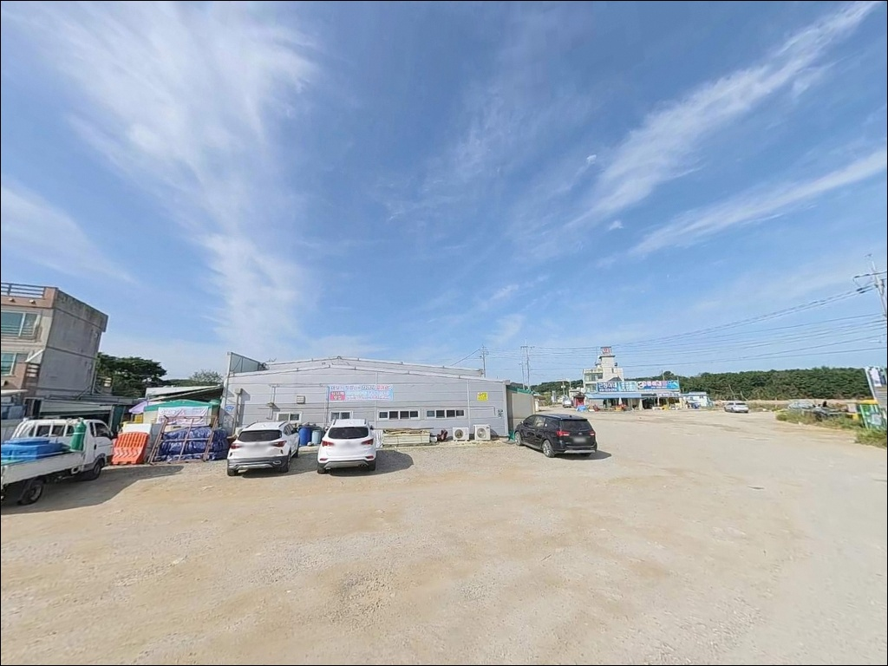
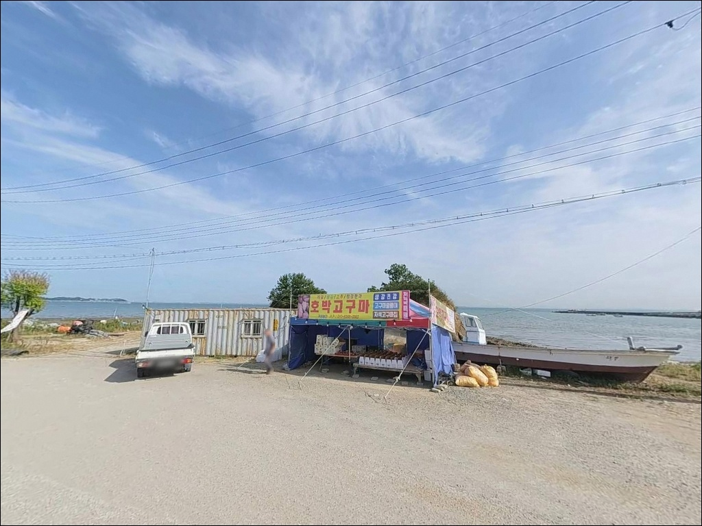
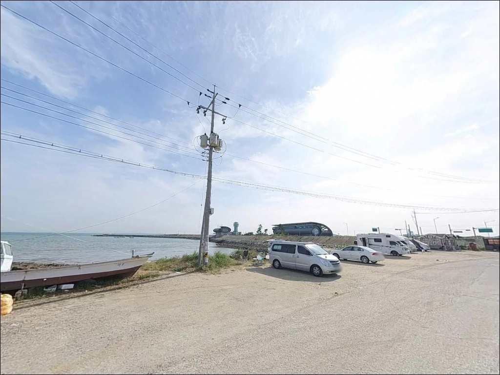
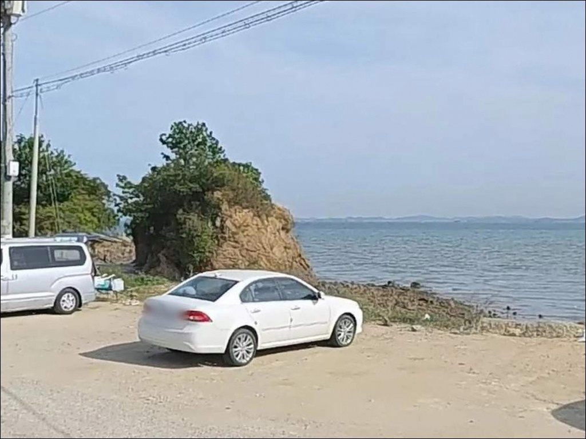
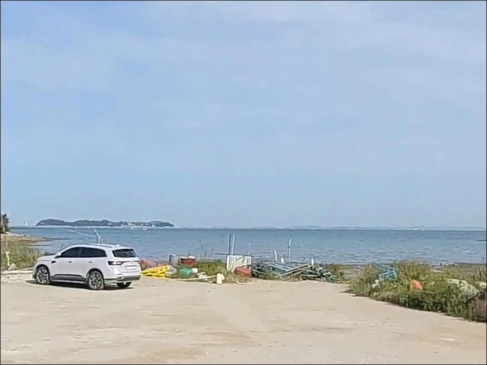
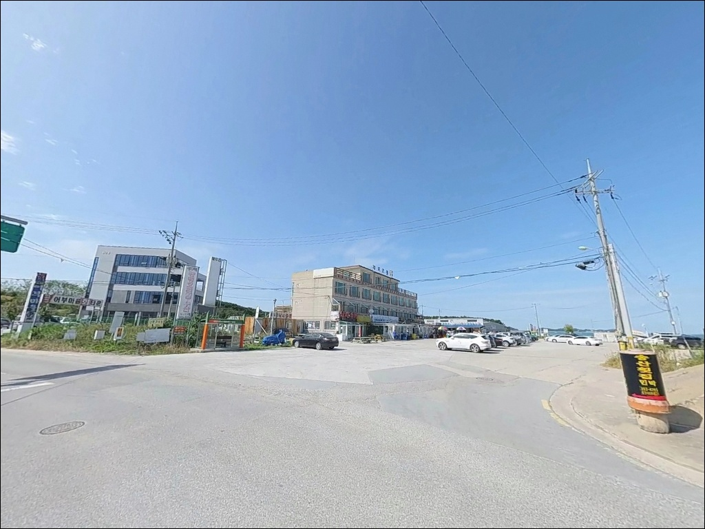

마섬포구, 충남 당진시 바다와 가장 가까이 머무는 차박, 낚시 해안 명소
이 페이지에는 광고(제휴 링크 포함)가 있으며, 광고 링크를 통해 구매하면 운영자가 판매 수익 또는 수수료를 받을 수 있습니다. 포인트 사진: 카카오맵 스카이뷰·로드뷰. 이 페이지의 지도·사진 이미지는 카카오맵의 실제 서비스 이미지와 다를 수 있습니다.


포인트 안내
마섬포구
충남 당진시 석문면 장고항리 92-18
만조 타이밍을 맞추지 않으면
마섬포구에서는 낚시 자리 자체가 성립하기 어렵습니다.
서해 갯벌 특성상 간조 시 수심이 크게 빠져
채비를 운용할 구간이 사라지고,
물때를 무시한 방문은 빈손으로 끝나기 쉬운
포인트입니다.
이 글은 마섬포구의
진입 여건, 물때 판단 기준,
낚시 방식 적합성과 차박 체류 조건에 집중합니다.
조황 단정이나 특정 어종 보장은
이 글의 범위에 포함되지 않습니다.

1. 포구 위치 및 진입 동선 분석
마섬포구는 석문방조제 북단 끝자락에 위치합니다.
석문방조제 도로를 따라 끝까지 이동하면
포구 진입로와 자연스럽게 연결되는 구조이며,
진입로 자체는 포장도로로
승용차나 중형 SUV 기준 접근에 큰 어려움은 없는 편입니다.
주차는 선착장 인근 공터를 활용하는 방식이 일반적입니다.
다만 주말에는 낚시꾼과 차박 방문객이 겹치면서
오전 일찍 자리가 채워지는 경향이 있습니다.
평일 방문이 주차 여건 면에서 여유 있고,
주말이라면 이른 도착이 기본 전제입니다.
포구 규모가 크지 않은 만큼 회차 공간도 제한됩니다.
대형 SUV나 캠핑 장비를 실은 차량이라면
진입 후 후진 진출 여부도 미리 판단해 두는 편이 좋습니다.

2. 차박 환경 평가 및 야간 체류 여건
마섬포구 인근에는 간자미 전문 식당과
포구 상권이 형성되어 있어,
야간에도 상가 불빛과 가로등이 일부 존재합니다.
완전한 고립형 노지 포인트라기보다는
포구 상권과 공존하는 형태에 가까운 환경입니다.
차박 위치 선정 시 반드시 고려해야 할 것이
만조선 확인입니다.
서해 조수간만의 차가 큰 이 지역에서
갯벌 가까이 주차한 차량이 밀물에 잠기는 상황이
실제로 발생하는 사례가 있는 만큼,
바다타임 기준 만조 수위와 주차 지점 고도를
반드시 함께 확인해야 합니다.
바람은 방조제 방향과 기상 조건에 따라
달라지는 편입니다.
강풍 예보가 있을 때는 방조제 끝자락 특성상
노출이 높아질 수 있어
출발 당일 기상청 예보를 재확인하는 것이 좋습니다.


3. 주변 편의시설 및 인프라 현황
포구 인근에 편의점이 있어
기본 식음료와 간단한 소품은 현장 해결이 가능합니다.
화장실도 포구 입구 쪽에 위치한 것이
복수 후기에서 확인됩니다.
다만 시설 운영 상태는
현장에서 직접 확인하는 것이 안전합니다.
당진 9미 중 하나인 간자미는
홍어 일종으로 마섬포구가 대표 산지입니다.
포구 주변에 간자미 전문 음식점이 다수 자리하고 있어
출조 전후 식사 계획을 잡기에 나쁘지 않은 환경입니다.
주유소는 포구 인근에서 별도로 확인되지 않습니다.
석문방조제 진입 전 미리 주유를 마쳐두는 편이
현실적인 준비입니다.

4. 방문 전 준비사항 및 체크 포인트
마섬포구 방문 전 가장 먼저 확인해야 할 것은
물때입니다.
바다타임에서 당진 석문 기준 물때표를 확인하고,
만조 전후 2~3시간을 기준으로
도착 시각을 역산해서 출발하는 것이
기본 전략입니다.
갯벌이 넓게 드러나는 포인트인 만큼
갯벌 위를 걷거나 접근하는 상황이 생길 수 있습니다.
밀물이 빠르게 들어오는 서해 특성상
조류 방향과 만조 예정 시각을 파악하지 않고
갯벌에 깊이 들어가는 것은 위험합니다.
갯벌 접근 시 퇴로 확보와 복귀 시간 관리가
안전의 기본 조건입니다.
포구 주변 어선 접안 구역에서의
낚시 가능 여부는 현장에서 직접 확인하는 것이 맞습니다.
어선 통행 동선과 어구에 접촉하지 않도록 자리를 잡고,
어촌계 구역 여부도 출발 전 확인해 두는 편이 좋습니다.

5. 지형 기반 낚시 여건 분석
마섬포구는 석문방조제 끝자락에 자리한
갯벌 연안형 소규모 포구입니다.
썰물 시 포구 주변으로 갯벌이 넓게 드러나는 구조로,
수심은 전반적으로 완만한 편이며
만조 전후를 기준으로 낚시 가능 수심이 확보됩니다.
방파제 끝단 방향으로는 수심이 상대적으로 깊어지는
구간이 형성되는 것으로 추정됩니다.
석문방조제와 인접한 구조 특성상
방조제 사면 방향의 조류 흐름이 일정하게 유지되며,
이 흐름이 서해 연안 어종의
회유 길목 역할을 하는 조건을 만들어냅니다.
바닥은 서해 갯벌 특성상 펄·모래 혼합 구조로,
암초형 밑걸림보다는 채비 흐름 관리가 핵심 변수입니다.
가까운 자리보다 원거리에서 수심이 나오는 편이므로
거리를 확보한 채비 운용이 유리합니다.
최신 조황은 출발 전 반드시 검색해 보시기 바랍니다.


6. 포인트에 적합한 낚시 스타일 제안
이 포인트에서 기본이 되는 스타일은
원투낚시입니다.
만조 전후 수심이 확보된 시간대에
채비를 멀리 던지면
망둥어, 붕장어, 도다리 계열 어종을
기대해 볼 수 있는 지형 조건입니다.
특히 가을 야간에는 붕장어 입질이 살아나는 경향이 있어
야간 원투로 노려볼 만합니다.
가을 시즌에는 주꾸미와 갑오징어 에깅도
이 포인트에서 시도할 만한 스타일입니다.
석문방조제 인근 서해 연안은
가을 주꾸미·갑오징어 시즌이 활발한 권역으로,
방파제 끝단이나 수로 방향으로 캐스팅하는 방식이
지형 조건에 어울립니다.
루어낚시의 경우 방파제 주변과
조류가 지나는 수로 구간에서
우럭, 숭어를 대상으로 시도해볼 수 있습니다.
만조 전후로 수심이 확보된 구간이 한정되는 편이므로
물때 타이밍에 맞춰 운용하는 것이 기본 조건입니다.
찌낚시의 경우 내항 쪽 수심이 얕아
운용 범위가 좁은 편입니다.
찌낚시를 주력으로 한다면
방파제 외항 방향에서 만조 수심을 활용하는
구간을 먼저 탐색하는 것이 유리합니다.

7. 대안 포인트 및 플랜 B 제시
마섬포구에 주차 여건이 여의치 않거나
조류 조건이 맞지 않을 때
가장 먼저 이동할 곳은 장고항입니다.
국가어항으로 방파제 규모가 크고
진입과 주차 여건이 안정적이며,
원투낚시부터 루어낚시까지
폭넓게 운용할 수 있는 방파제 구조를 갖추고 있습니다.
선상낚시를 원한다면 장고항이 현실적인 선택입니다.
광어, 우럭, 농어, 주꾸미, 갑오징어를 대상으로
출조점이 다수 운영 중이므로,
마섬포구 조건이 여의치 않을 때
장고항 선상 출조로 전환하는 것이 효율적입니다.
연안 원투 포인트를 더 넓게 탐색하고 싶다면
석문방조제 전 구간이 대안입니다.
방조제 사면을 따라 이동하며
자리를 바꾸기 좋은 구조이므로,
조황 변수가 있을 때 이동 탐색 방식으로
활용하기 좋습니다.

물때를 알고 가면
마섬포구가 달라 보입니다
서해 갯벌형 포인트 특성에 익숙하고
원투낚시나 가을 에깅을 즐기는 낚시꾼이라면
마섬포구의 지형 조건은 나름의 가능성을 가진 곳입니다.
물때만 잘 맞추면 방파제 끝단에서
다양한 서해 연안 어종을 기대해볼 수 있고,
가을 시즌에는 주꾸미·갑오징어 에깅도
충분히 해볼 만합니다.
반면 물때를 확인하지 않고 간조에 도착하거나
주말 늦은 오전에 주차 자리를 기대하고 간다면
낚시 시작도 전에 조건이 어긋날 수 있습니다.
물때 확인, 만조선 기준 주차 위치, 갯벌 진입 금지,
이 세 가지를 챙기고 간다면
기억에 남는 출조가 될 수 있는 포인트입니다.
포구 인근 편의시설이 갖춰져 있어
낚시 마무리 후 간자미 한 상으로 마무리하는
차박 낚시 여행자에게도 나쁘지 않은 선택입니다.